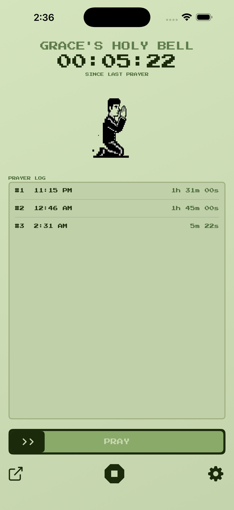
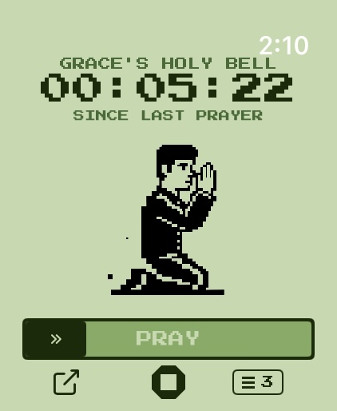
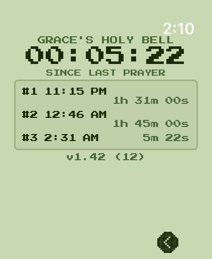

GRACE'S
HOLY BELL
A prayer timer built to track your own devotion.
A deliberate slider you won't trigger by accident, a live interval clock, and a log of how often you pray. On iPhone and Apple Watch.

Now available on the Apple App Store.

iPhone

Apple Watch Ultra
— timer

Apple Watch Ultra
— log
BUILT FOR PRAYER,
NOT ACCIDENTS
Every action uses an intentional slider or a confirmation step. Hold your phone or rest your wrist during prayer without worrying that a bump will stop the timer or reset a session. Accurate timekeeping is the whole point, and the app is built to protect it.
KEEP TRACK OF YOUR
TIME BETWEEN PRAYERS
Slide PRAY to log a prayer. The app starts a live timer counting the interval until the next one. Each session builds a clear log of when every prayer happened and how long each interval lasted — so you can see the rhythm and frequency of your prayer at a glance.
AMEN ALARM
Turn on an optional reminder that vibrates your iPhone or Apple Watch a set interval after your last prayer, from 30 minutes to 2 hours. No jarring sounds — just a quiet nudge.
ON YOUR PHONE,
OR ON YOUR WRIST
Log and view your prayers from either device. Your iPhone keeps accurate time even when the Watch screen is off, and the two stay in sync automatically, including after they briefly lose connection.
With a calm, retro look, Grace's Holy Bell stays out of your way — so the focus stays on prayer, not the app.